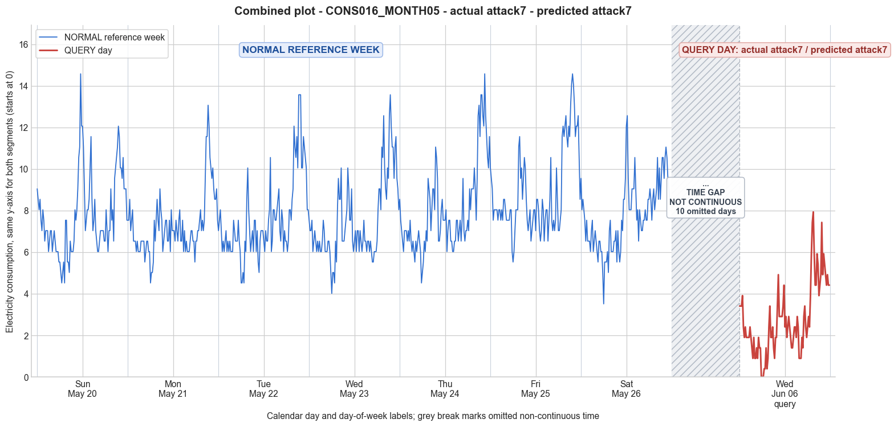

CONS016_MONTH05 · actual attack7 · predicted attack7
- Pair
- CONS016_MONTH05
- GT
- attack7
- Prediction
- attack7
- Binary GT
- attacked
- Binary Prediction
- attacked
- Source
- E010
- Parse
- stored
- Date
- 2012-06-06
- Weekday
- Wednesday
- Latency
- 2.05 min
- Tokens
- 9678

Final output
Classification: - Manipulated Identified Attack: - Most Likely: Attack 7 - Confidence: High - Reasoning: The query day exhibits a preservation of the normal diurnal pattern but with all values uniformly reduced and multiple zero readings during the originally low-consumption early-morning period. This exactly matches the mechanism of Attack 7 – a constant offset subtracted from every sample, with negatives clamped to zero. Attack 1 (constant scaling) and Attack 3 (per-sample random scaling) cannot produce repeated exact zeros or a flat block of zero. Attack 2 (on-off zeroing) does not explain the diminished non-zero values; Attack 4 would leave some period at normal consumption; Attack 6 (capping) would not generate zeros; Attack IEEE would retain original amplitudes in un-zeroed intervals. Attack_Behavior_Explanation: - The attacker subtracts a fixed cut-off value (~5.64) from the actual consumption readings of the day. Any sample that becomes negative is reported as 0. This preserves the overall trend (daily rise and fall) but lowers the entire profile and introduces zeros during the morning trough. - Magnitude is reduced significantly (mean drops from ~7.54 to 2.76, max from 13.57 to 7.93), while the shape of the diurnal curve is retained. Zeros appear in a block where original values were below the cut-off. - Possible technical causes: false data injection, reprogramming of the meter to report consumption relative to an offset, or a sophisticated meter bypass that implements a fixed subtraction before reporting.
Prompt
You are a domain expert in smart grid security and electricity theft analysis, with deep knowledge of non-technical loss (NTL) attack patterns in smart meters. You are given: 1. A plot of one week of original (normal) energy consumption for a smart meter, provided as context for the customer's typical consumption behavior. 2. A plot of one day of energy consumption for the same smart meter, which may or may not be manipulated. Below are common attack types, each defined by how consumption values are altered, their impact on magnitude and trend, and their possible technical causes. Attack 0: Generated by replacing all electricity consumption samples with zero values for the entire observation duration. Simulates a scenario where no energy usage is reported at all. May be caused by a total meter bypass or severe meter malfunction. Completely eliminates both the trend and magnitude of the consumption profile. Attack 1: Multiplies the actual energy consumption by a constant random value between (0,1). The lower the factor, the higher the severity. Can be triggered by meter bypass, magnetic interference, reverse current, and false data injection. The consumption trend remains the same but the magnitude is uniformly reduced. Attack 2: Generated by replacing consumption samples with zeros for a random duration. Also known as an on-off attack. Can be caused by full meter bypass, false data injection, and reverse current. Changes both the trend and amplitude. Attack 3: The actual consumption is multiplied by different random factors between 0 and 1, with a unique factor per sample. Similar to Attack 1 but the scaling factor varies per reading. Caused by meter bypass, magnetic interference, and reverse current. Changes both the trend and amplitude. Attack 4: Simulates energy theft over a randomly selected period within the observation window. All measurements in that period are reduced. Caused by meter bypass, magnetic interference, reverse current, and false data injection. Changes both the trend and amplitude. Attack 5: Each sample is replaced by a false value obtained by multiplying the average normal consumption by a random variable between 0 and 1, with a different variable per sample. Caused by false data injection. Produces a completely different pattern from the original consumption profile, changing both trend and magnitude. Attack 6: A random cut-off point is selected and all consumption values above it are replaced by that cut-off value. The attacker avoids exceeding a predefined maximum limit. Mainly caused by false data injection. Changes both the trend and amplitude. Attack 7: A random cut-off point is subtracted from each sample; if the result is negative, zero is reported. Similar to Attack 6 but replaces exceeding values with zero instead of the cut-off point. May be caused by false data injection or total meter bypass. Does not change the trend but reduces overall consumption. Attack 9: All samples are replaced by the average daily energy consumption, resulting in a flat constant profile. Easily detectable because constant consumption does not reflect normal customer behavior. Caused by false data injection. Eliminates all trends. Attack 10: Reverses the consumption pattern without reducing the total amount. Applicable when the electricity company uses time-varying pricing, allowing the attacker to shift high consumption to off-peak periods. Caused by false data injection. Changes the trend without decreasing total consumption. Attack 12: The attacker replaces their consumption pattern with that of a lower-consuming user. The legitimate user unknowingly pays the adversary's electricity bill. Caused by false data injection. Attack IEEE: For each 15-minute interval across the entire day, the consumer either reports the actual electricity consumption or substitutes it with zero. The result is a profile where some intervals reflect real consumption while others are zeroed out, creating an irregular pattern across the full day. May be caused by false data injection. Changes both the trend and amplitude. Given the two plots, determine: 1. Whether the day is attacked or original - compare the flagged day against the normal week and assess whether the consumption pattern is consistent with normal behavior or shows signs of manipulation. If the day is consistent with the customer's typical consumption behavior, classify it as original and provide no further analysis. If manipulation is detected, proceed to point 2. 2. Which attack type this most likely is - identify the single most probable attack and justify your choice based on how the flagged day deviates from the normal week. 3. The behavior of the identified attack - explain how the consumption values are manipulated, their impact on magnitude and trend, and the possible technical causes behind this type of attack. Output Format: Classification: - Original | Manipulated Identified Attack: (fill only if manipulated) - Most Likely: Attack X - Confidence: High | Medium | Low - Reasoning: Why it matches Attack X and why Attack Y and Attack Z were ruled out (list top 2 alternatives considered) Attack_Behavior_Explanation: (fill only if manipulated) - How consumption values are manipulated relative to the normal week - Impact on magnitude and trend - Possible technical causes
Reasoning content
We are asked to analyze a query day (DAY_ID=3) against a reference week of normal consumption. The reference week has 7 days (Day 0 to Day 6). The query day is DAY_ID=3 but note that in the reference week Day 3 corresponds to a Wednesday (dow=2) and dom=3. The query day also has DAY_ID=3 but it's from a different month (cal_month=6 vs 5) and dom=17, so it's a different day. We need to determine if the consumption is manipulated or original.
First, let's examine the per-day statistics:
Reference week days have means around 7.54 for Day 3, ranging from 7.28 to 8.87. Mins are around 3.52-5.53, maxes around 12.56-14.57.
Query day: min=0.00, max=7.93, std=1.70, mean=2.76. Mean is much lower than any reference day. Min is 0.00, which is unusual (reference days have min >= 3.52). Max is 7.93, which is lower than typical maxes around 12-15. So the consumption is significantly reduced, and there are zero values.
Now let's look at the temporal features: Query day is a Wednesday (dow=2) like Day 3 in the reference week, but different date. So we might compare with Day 3's pattern, but also with the overall pattern of the week. The query day shows many low values and zeros towards the beginning (readings from midnight to early morning). Specifically, the query day readings start with 3.41, then drop to 1.90, etc., and zeros appear at index 23, 24, 25 (based on 15-min intervals, 96 readings, zeros at positions 0:00? Let's map indices to time: 96 readings, so 0-3 is first hour, etc. indices 0-3: 3.41,3.41,3.41,3.91; then 4-7: 2.41,1.90,2.41,1.90; etc. Zeros at indices 23,24,25,26? Actually sequence: ...1.40, 1.40, 0.00, 0.00, 0.00, 0.40, 0.40... So zeros at indices 23-25? Let's count: reading numbers:
0:3.41,1:3.41,2:3.41,3:3.91
4:2.41,5:1.90,6:2.41,7:1.90
8:1.90,9:1.90,10:1.90,11:2.41
12:1.90,13:1.40,14:0.90,15:1.90
16:0.90,17:0.90,18:1.40,19:0.90
20:1.90,21:1.40,22:1.40,23:0.00
24:0.00,25:0.00,26:0.40,27:0.40
28:1.40,29:0.40,30:0.90,31:2.41
... So zeros in the early morning between roughly 5:45 and 6:15? Actually 23rd reading is at 5:45 (since 24*15min = 6 hours, reading 0 is 0:00-0:15, reading 23 is 5:45-6:00). Then zeros at 24 (6:00-6:15), 25 (6:15-6:30? No, careful: reading 0: 0:00-0:15, 1:0:15-0:30, 2:0:30-0:45, 3:0:45-1:00. So reading 23: 5:45-6:00, 24:6:00-6:15, 25:6:15-6:30, 26:6:30-6:45, 27:6:45-7:00. So zeros from 5:45 to 6:30, then 0.40. So a block of zeros. Later, no zeros but low values until a peak in the late morning? Actually there's a peak around reading indices 76-77: 7.43, 7.93, etc. That's around 7:00 PM? 96/24 = 4 per hour, so reading 76 is 19:00-19:15 (since 0:00 start, reading 0). So the highest consumption is 7.93 at 19:15-19:30 maybe. Compared to reference days, peaks are usually around 12-14. So the whole day is scaled down and includes a zero block.
Which attack types could produce this?
- Attack 0: all zero. Not the case, only some zeros, not all.
- Attack 1: multiply by constant between 0 and 1. This would reduce all values proportionally, but would not introduce zeros unless original values were zero. Original min is 4.02 etc., no zeros. So if multiplied by constant, all values would be >0. Attack 1 cannot produce zeros. Not consistent.
- Attack 2: on-off attack, zeros for random duration. Yes, there is a zero block of duration ~1 hour. That matches Attack 2: "replacing consumption samples with zeros for a random duration". This could cause zeros and also may leave other parts unchanged? But here other values are lower than normal, but not zeroed. However Attack 2 description: "Generated by replacing consumption samples with zeros for a random duration." It doesn't say anything about scaling other values. It just replaces some with zero. But in the query day, non-zero values are also significantly lower than normal (mean 2.76 vs 7.54). If only a random duration is zeroed, the overall mean would be reduced but still the non-zero segments should look like normal consumption proportions. Let's check: In reference Day 3, the early morning (pre-6am) values are around 6-7? Actually Day 3's early morning readings:
Day 3: 7.54, 7.04, 7.04, 7.54, 6.03, 6.53, 7.04, 6.53, 6.03, 6.53, 6.03, 6.53, 6.03, 6.03, 6.53, 7.54, 7.04, 6.03, 6.03, 6.03, 6.53, 6.53, 6.03, 5.03, 4.02, 5.03, 5.03, 4.52, 6.53, 5.53, 8.04, 9.55...
So early morning values are in the range 4-8. The query day early morning has values around 0-3.41, much lower. So the non-zero segments are also reduced. Attack 2 alone wouldn't explain the reduction in non-zero values. So Attack 2 is not a good match because it only replaces some intervals with zero, not scale the remaining ones.
- Attack 3: multiply each sample by a different random factor between 0 and 1. This would produce varying reductions, could produce very low values but would not produce exact zeros (unless the factor is exactly 0 for some, but description says random factor between 0 and 1, could include 0? Typically "between 0 and 1" means (0,1) open interval? The definition says "by different random factors between 0 and 1, with a unique factor per sample." If factor can be 0, then zeros possible. But more likely it's (0,1) and zeros not expected. And the query day has multiple zeros exactly, not just near-zero. Attack 3 might produce values near zero if factor is very small, but exact zeros suggest intentional zeroing. Attack 3 could produce zeros if factor exactly 0, but it's less likely. Also, Attack 3 changes trend and amplitude. Could be possible.
- Attack 4: Simulates energy theft over a randomly selected period within the observation window. All measurements in that period are reduced. This could produce a segment of reduced values (not necessarily zeros) and normal elsewhere. The query day has a zero block, but also seems overall reduced, not just one period. For example, the max is 7.93, while normal max is ~13.57, so even the highest period is reduced. Attack 4 would typically have a period where values are scaled down or replaced, while other periods are normal. Here, morning values (after zeros) are also low. For instance, reading 31: 2.41, 32:3.41, etc. Normal morning (around 7-8am) values are higher (like 8.04, 9.55). So no normal high values are present. Thus Attack 4 is not fitting because we'd expect some period of unreduced normal consumption.
- Attack 5: Each sample replaced by false value obtained by multiplying average normal consumption by random variable between 0 and 1, different per sample. This would produce a profile with no relation to original, roughly centered around a fraction of the average. The mean of query day is 2.76. Average normal consumption of Day 3 is 7.54. If multiplied by random ~0.36 on average, that could produce mean 2.76. But the query day's values show some pattern: early morning low but not zero except a block, then rise to a peak in the evening, similar shape to normal? Let's compare the shape. Normal Day 3: starts high (midnight to early morning), dips to minimum around 4-5am, rises to morning peak around 8am, then fluctuates, evening peak around 8pm. Query day: starts at 3.41, dips to 0.90, zeros, 0.40, then rises to 2.41, 3.41, then later dip and peak at 7.93 around evening. The shape roughly mimics the normal pattern but scaled down overall and with a zero block. The presence of a zero block is akin to attack 2 or possibly attack IEEE. Attack 5 would produce a completely different pattern random, no resemblance to the normal curve. The query day seems to have a similar diurnal pattern but with reduced magnitude and a stretch of zeros. So Attack 5 unlikely.
- Attack 6: A random cut-off point is selected and all consumption values above it are replaced by that cut-off value. This caps high values. That would reduce high peaks but leave lower values unchanged. In Day 3, min for reference is 4.02, max 13.57. If a cut-off, say 8, is used, then all values above 8 become 8, resulting in max 8, but min still around 4. So mean would be maybe around 5-6. But query min is 0.00, so there are zeros, not just cap. Also, reference Day 3 min is 4.02, so cap wouldn't produce zeros. So Attack 6 cannot produce zeros.
- Attack 7: A random cut-off point is subtracted from each sample; if negative, zero is reported. This shifts the whole profile down by a constant. If cut-off is, say, 6, then values originally 6 become 0, above 6 become reduced. But then original low values (like 4) become 0 as well. This could produce many zeros. Let's test: Day 3 reference min 4.02, max 13.57, mean 7.54. If we subtract a constant C, we can achieve a max of 7.93 and min 0.00. The query max is 7.93, min 0.00. Suppose C = 5.64 (13.57 - 5.64 = 7.93). Then original min 4.02 - 5.64 = -1.62 → 0, so min 0. That would give some zeros (for values <=5.64). Many reference Day 3 values are around 6-8, so they'd become positive but low. The shape would be kept, just shifted down. The query day has a zero block from 5:45 to 6:30. In the reference, what are the values around that time? Day 3 reference: indices 23 (5:45-6:00): 5.03; 24 (6:00-6:15): 4.02; 25 (6:15-6:30): 5.03; 26: 5.03; 27: 4.52. If we subtract ~5.64, all become negative → zero. That matches the zero block. Other low values like reference 6.03 become 0.39 (matches 0.40 observed). Reference 6.53 becomes 0.89 (matches 0.90). So many numbers align. Attack 7: "A random cut-off point is subtracted from each sample; if the result is negative, zero is reported." This perfectly explains the query day: a constant shift downward, with negative values clamped to zero. The shift would be a constant C such that max becomes about 7.93. Let's estimate C: original max of Day 3 is 13.57, max of query is 7.93, difference 5.64. Original min 4.02 would become -1.62 → 0, matching min 0. Consistent. The mean: original mean 7.54 - 5.64 = 1.90, but because negative values are zeroed, zeros increase mean slightly? Actually, after clamping, the mean would be higher than 1.90 because zeros are not negative. Let's compute approximate mean: sum(original_i) = 7.54*96 = 723.84. Subtract 5.64*96 = 541.44, sum becomes 182.4. But those original_i < 5.64 become 0, so we add back some amount? Wait, the operation is: new_i = max(0, original_i - C). So the sum is sum_{i} max(0, orig_i - C). That sum is less than sum(orig_i - C) because negatives become 0, adding back the absolute negative. The mean of query is 2.76, much higher than 1.90. So it's plausible with a C around 5.64, many values are just above zero, raising the mean. So Attack 7 fits very well: the pattern is identical to original Day 3 but shifted down and zeroed where negative. And note that Attack 7 description says: "Does not change the trend but reduces overall consumption." Indeed, the shape (trend) is preserved, just shifted. The query day shows a similar trend to Day 3: early morning dip, then rise, then evening peak. The zero block corresponds to the original trough. That's a strong match.
- Attack 9: Flat constant profile. Not the case.
- Attack 10: Reverses the pattern. Not the case.
- Attack 12: Replace with lower-consuming user's pattern. That could produce lower values but would not necessarily preserve the shape of Day 3. It could have a zero block if that user had zero, but likely to have a different pattern. Attack 7 is more consistent.
- Attack IEEE: For each 15-min interval, either reports actual or zero. This would result in a mix of original readings and zeroes. Here, the non-zero readings are not at normal levels; they are reduced. For example, the highest query reading is 7.93, while original max is 13.57. So if it were IEEE attack, the non-zero intervals should show actual consumption (original values). But they are much lower. So IEEE attack would produce readings like: actual, actual, zero, actual, zero, actual, etc., where the actual values match the reference. That's not the case. Thus IEEE is ruled out.
Thus, Attack 7 is the best match.
Now, we must confirm that the flagged day is indeed manipulated. The statistics show a drastic reduction and zeros not seen in the normal week. The normal week shows no zeros at all (mins 3.52-5.53). So it's clearly manipulated. So classification: Manipulated.
Identify attack: Attack 7.
Confidence: High, because the pattern perfectly matches a downward shift with clamping to zero.
Reasoning: The query day's consumption trace closely resembles the reference Day 3's shape but lowered by a constant offset, leading to zero values during low-usage periods (early morning). This aligns with Attack 7's definition. Attack 1 and 3 cannot produce exact zeros; Attack 2 would not reduce non-zero segments; Attack 4 would show a period of reduction but still normal elsewhere; Attack 6 caps but no zeros; Attack IEEE would keep original values in non-zero intervals. So Attack 7 is the only plausible one.
Attack_Behavior_Explanation: A cut-off value (approximately 5.64) is subtracted from the actual consumption of the day. Any sample that would fall below zero is reported as zero. This manipulation reduces the overall magnitude of consumption while preserving the daily trend (shape) of usage. The zeros appear during the morning trough, and all other values are shifted down. Possible technical causes include false data injection or a meter bypass that reports consumption as the difference from a fixed threshold, e.g., by reprogramming the meter to offset consumption.
Now output according to format.